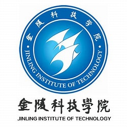

硕士研究生 |
我目前在江苏大学 计算机科学与通信工程学院攻读电子信息的硕士学位。 本人已于2021年在金陵科技学院软件工程学院获得学士学位。
我的研究兴趣主要包括: 医学图像处理, 计算机视觉 等。
硕士 江苏大学 (2021.9 ~ 2024.7)
|
|  | 本科 金陵科技学院 (2017.9 ~ 2021.7)
|
基于姿态与样式归一化的换衣行人重识别方法
成科扬, 梁赛, 司宇, 张海烽, 严浏阳, 沈维杰
国家发明专利, 公开号:CN115100684A
基于复合区块链的监控数据关联溯源方法
成科扬, 张海烽, 司宇, 沈维杰
国家发明专利, 公开号:CN114943007A